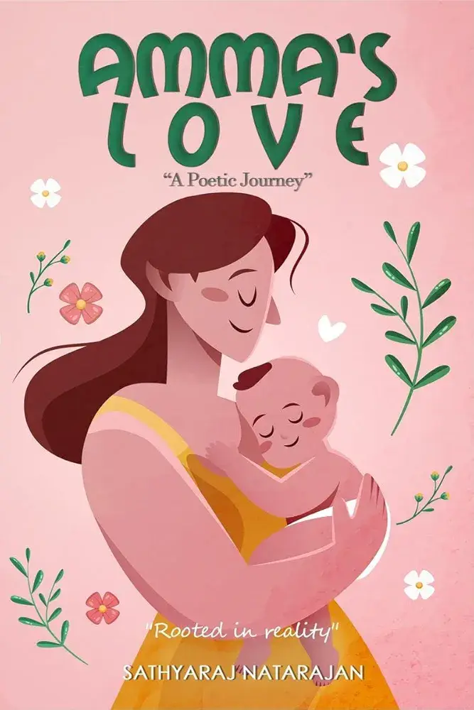
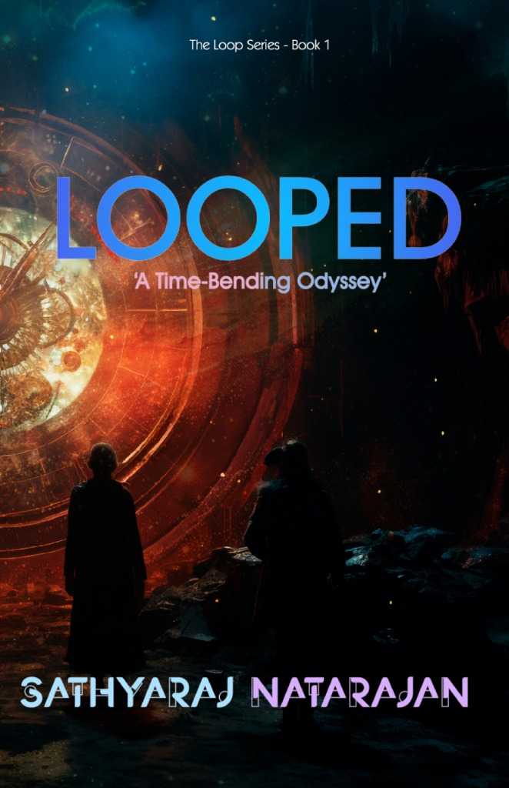
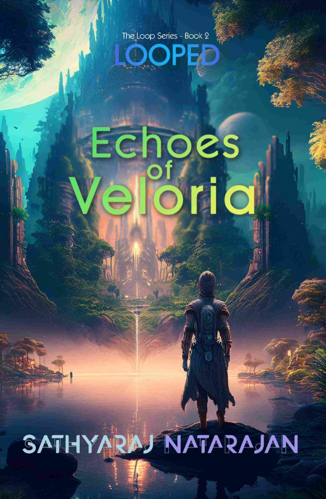
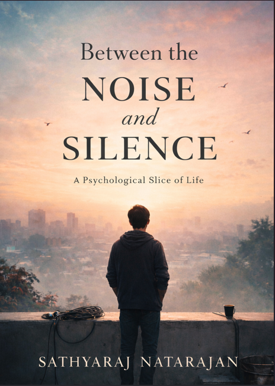
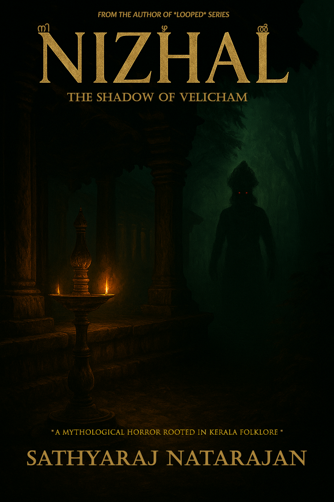
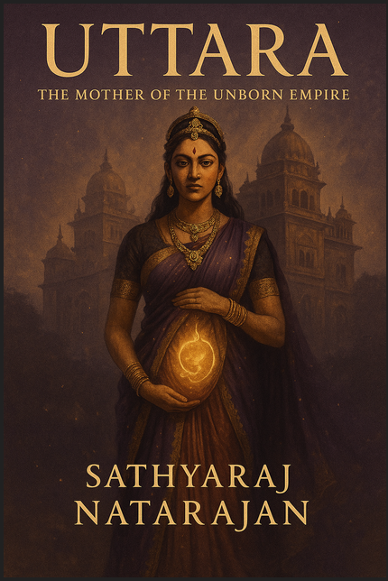
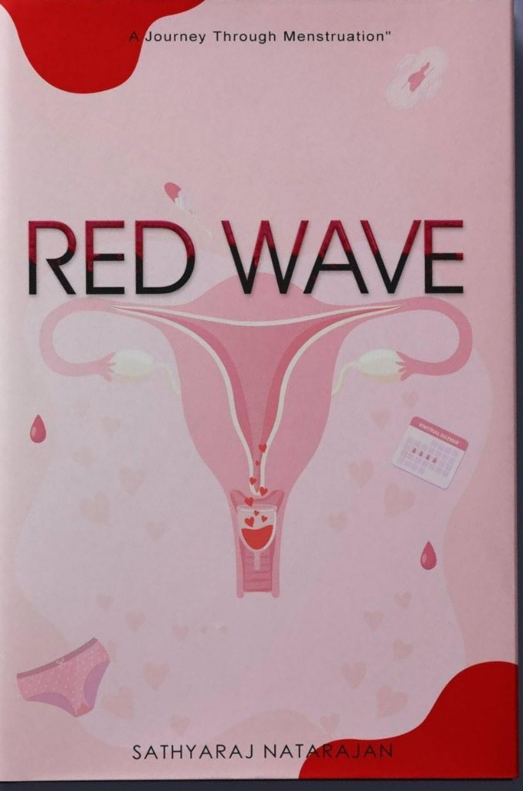

Visual Engineer · Author · Film Restoration
The beginning of everything.
Amma's Love Poetry was not written as a project or a publishing goal — it was written from life. The book is deeply inspired by my own journey, memories, and the bond I share with my mother. Through poems filled with love, gratitude, emotion, and reflection, the collection becomes more than poetry; it becomes a personal story told through verses. Every page carries fragments of emotions that many children silently hold for their mothers — the sacrifices they witness, the strength they admire, and the love that often remains unspoken. Looking back, this book was the first step into my journey as an author and the foundation from which every future story began.
Love is not always spoken — it lives in what a mother silently endures.

Where imagination turned into a universe.
The origins of Looped began long before the book itself existed. It was born during conversations with my friends while we were planning ideas for a short film. What started as discussions, theories, imagination, and late-night creative exchanges slowly transformed into something larger. At first, Looped was imagined as a standalone story. But while building the world of the first book, the universe kept expanding. New ideas appeared, hidden possibilities emerged, and what was once a single concept slowly evolved into a larger science-fiction saga. Driven by curiosity for science, mystery, and the unknown, Looped became my entry into speculative fiction and the beginning of a world that continues to grow beyond its original vision.
What if time is not a river moving forward, but an ocean with no shore?

The world expands. The mystery deepens.
With Looped: Echoes of Veloria, the universe built in the first book grows further into unexplored territory. What once began as a single idea evolves into a larger mythology filled with hidden truths, unanswered questions, and deeper layers of world-building. This book represents the next stage of the journey — not only for the story itself but also for me as a writer. It allowed me to push beyond the foundations of the first novel and explore a wider creative landscape where mystery, imagination, and possibility continue to collide.
Every echo carries the ghost of something that once dared to be real.

Inspired by life between work, people, and quiet moments.
This story comes from the spaces between reality and observation. Between the Noise and Silence draws inspiration from workplaces, colleagues, conversations, emotions, and moments that silently stay with us. Some experiences influenced me, some triggered thoughts, and some became questions that stayed in my mind. The story is not a direct retelling of anyone's life. Instead, it blends inspiration from real environments and emotions with fictional elements to create a psychological slice-of-life journey. At its heart, the book explores people hidden behind everyday routines — their dreams, struggles, loneliness, ambitions, and the silence that exists beneath the noise of life.
Behind every ordinary face is an extraordinary story no one thinks to ask about.

Folklore, fear, and stories whispered through childhood.
Nizhal is inspired by local folklore stories, village legends, and tales heard during childhood — stories passed from person to person, carrying mystery, fear, and imagination. The concept later evolved through discussions with friends and slowly merged with my own fictional perspective. What began as conversations and memories transformed into something darker — blending folklore with horror and psychological elements. Nizhal aims to explore the shadows hidden inside stories we grew up hearing… and ask what happens when those shadows begin to take form.
The stories your grandmother whispered in the dark were warnings, not tales.

The first step into a world I always wanted to create.
Uttara: The Mother of the Unborn Empire is the opening chapter of my upcoming mythological fiction series, Veera Stree Kathaas. The idea behind this series comes from something that stayed with me since childhood — growing up with the Mahabharata and other legends, one thought always remained: what about the women in these stories? Their emotions, sacrifices, fears, strengths, and untold perspectives. That question slowly became the seed of this series. Through my own fictional lens and world-building approach, Veera Stree Kathaas aims to explore these forgotten voices. Uttara becomes the first story in that journey — a tale of legacy, motherhood, destiny, and survival. More than a book, this series is a dream project. A world I hope will one day redefine my journey as an author.
She did not survive the war. She chose to outlast it.

Breaking the silence, one wave at a time.
RED WAVE is an awareness-driven work exploring menstruation through health, education, social realities, and human understanding. Born from years of observations, conversations, and questions inspired by the women who shaped my life — starting from my mother, relationships, and family stories. The deeper the exploration went, the more the vision expanded — covering menstrual health, different phases, products, period poverty, social stigma, emotional experiences, and the everyday realities faced by women across different environments. The vision behind RED WAVE is to create an accessible and meaningful work not only for women, but also for men — to understand, learn, support, and care. More than a book, RED WAVE is a journey of research, respect, and understanding.
What remains unspoken does not disappear — it waits to be understood.

Live Events · LED Installations · Visual Productions
The Path So Far
From the first page to worlds still unwritten.
Where it all began — a deeply personal poetry collection that opened the door to everything that followed.
Born from late-night conversations — a science-fiction universe that expanded far beyond its first idea.
The universe grew — deeper mythology, hidden truths, and a world that refused to stay contained.
A pivot inward — exploring the hidden lives of everyday people and the silence beneath the surface.
Folklore, fear, and shadows that were never just stories — into the dark heart of local legend.
A dream project — reimagining epic mythology through the untold voices of the women within it.
An awareness journey — breaking the silence around menstruation through research, respect, and empathy.